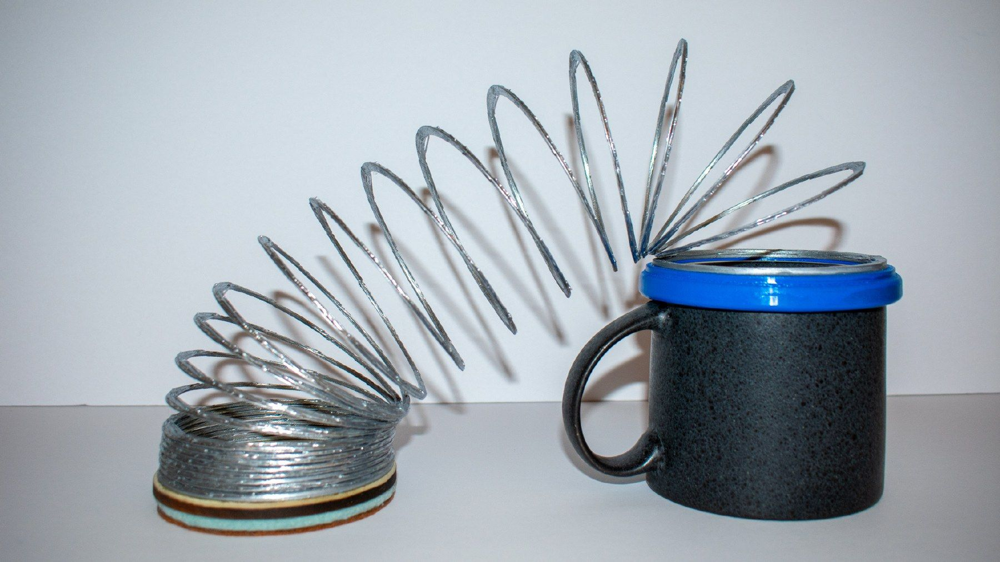
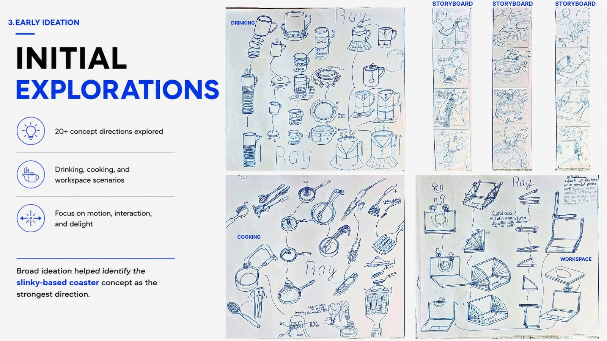
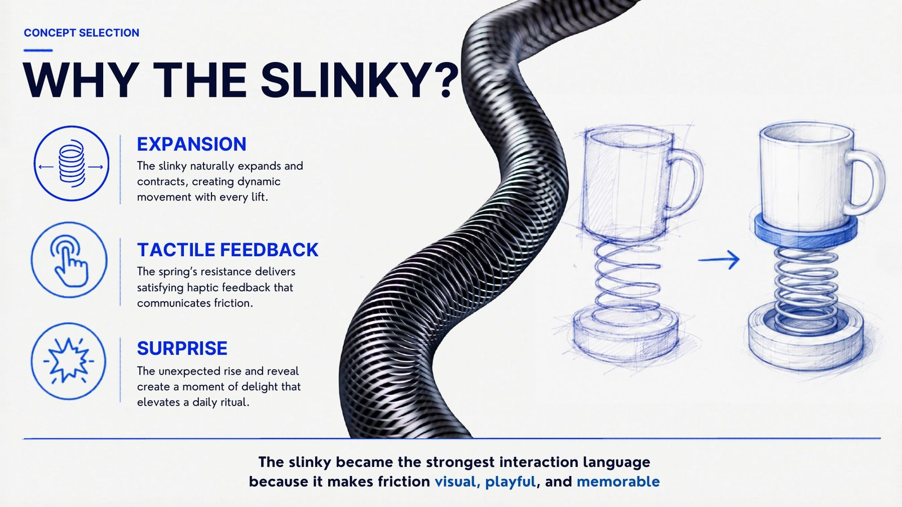
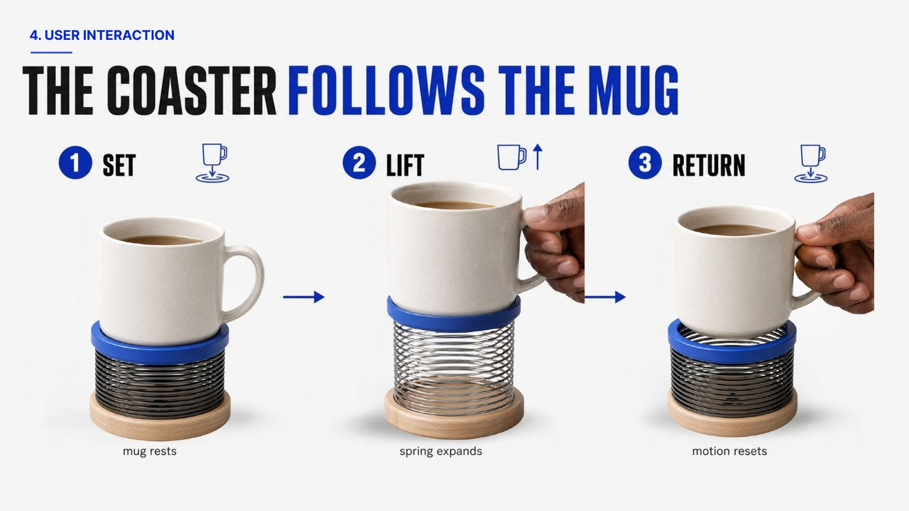
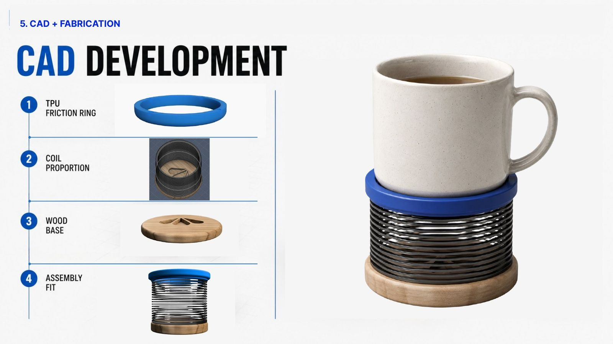
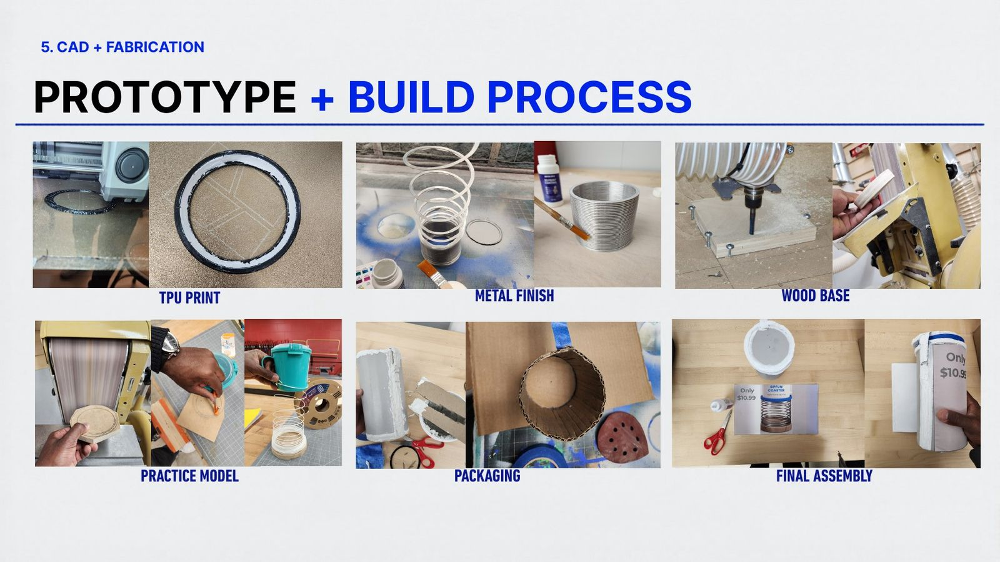
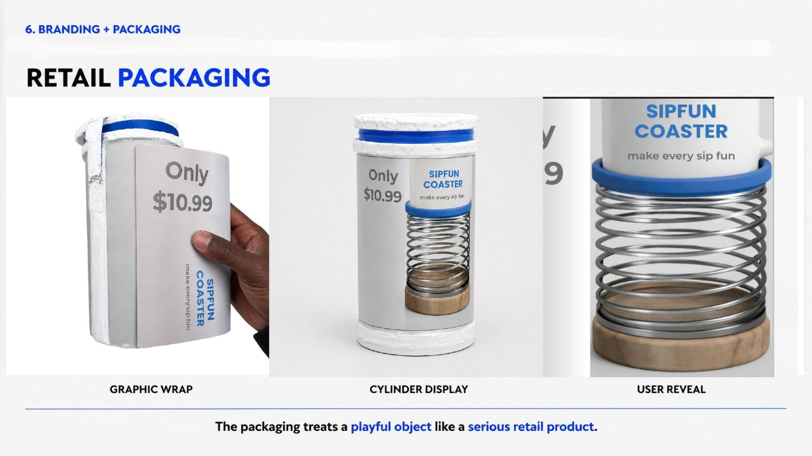
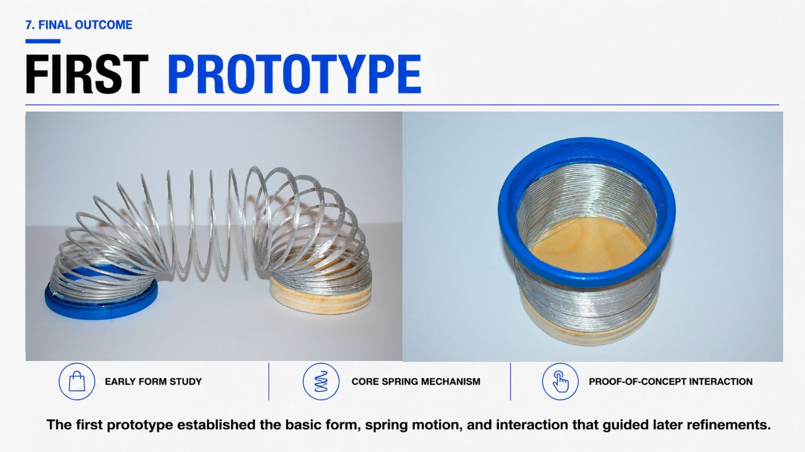
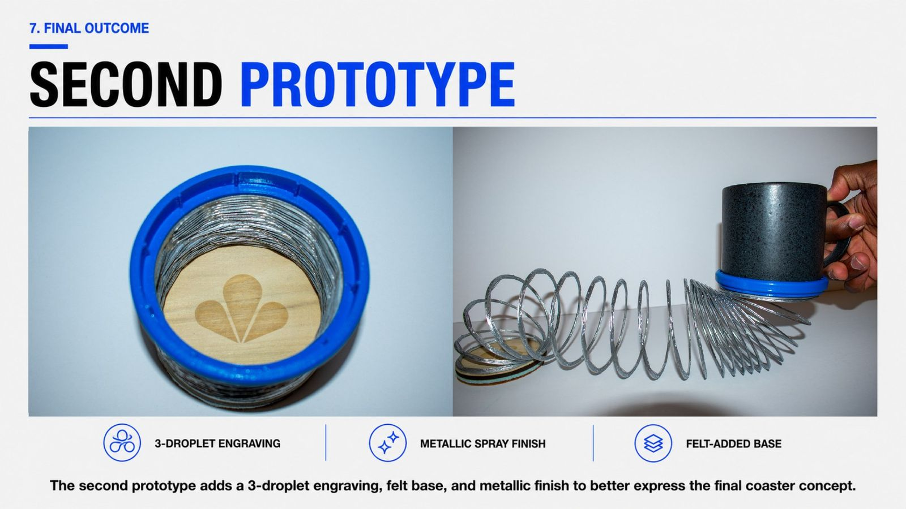
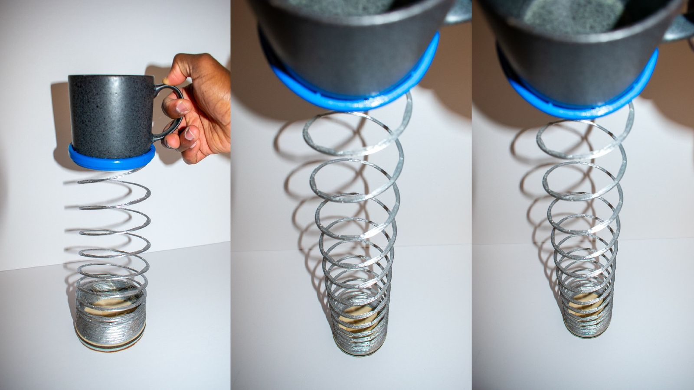

Industrial design · Interaction · Prototyping
SipFun Coaster
A coaster that springs up to follow your mug, so friction becomes delight

The problem
Product design usually works to remove friction. This brief asked the opposite: take a mundane, overlooked interaction and make it absurdly satisfying, dramatic or funny. It had to be analog, it had to actually work, and it had to look high-end, because the humor comes from a silly function presented seriously.
My role
I worked alone, from storyboards and explorations through CAD, fabrication, two prototypes and retail packaging.
Process
Explore everyday rituals
I storyboarded moments in drinking, cooking and the workspace, and prototyped quick explorations before narrowing in on the mug.

Initial explorations and storyboards Choose an interaction language
A slinky won because it makes friction visible. It expands and contracts with every lift, gives satisfying resistance, and surprises you when it rises and reveals itself.

Why the slinky: expansion, tactile feedback, surprise 
Set, lift, return: the coaster follows the mug Engineer it and package it seriously
A TPU friction ring grips the mug, a coil does the motion, and a wood base anchors it. I built it through a practice model, metal finishing and final assembly, then designed retail packaging that treats a playful object like a serious product.

CAD development 
Prototype and build process 
Retail packaging Two prototypes
The first prototype established the form, the spring motion and the interaction. The second added a three-droplet engraving, a felt base and a metallic finish to sell the concept.

First prototype 
Second prototype
Outcome
The final object shows that friction can be functional, playful and memorable.

What I learned
- Motion makes friction visible.
- Materials change perception: steel, silicone and wood balance utility and warmth.
- Tolerances matter for smooth, durable motion.
- Serious packaging makes the humor land.